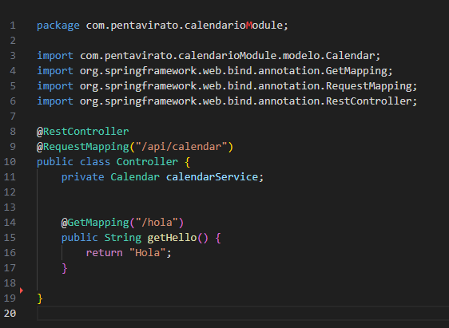
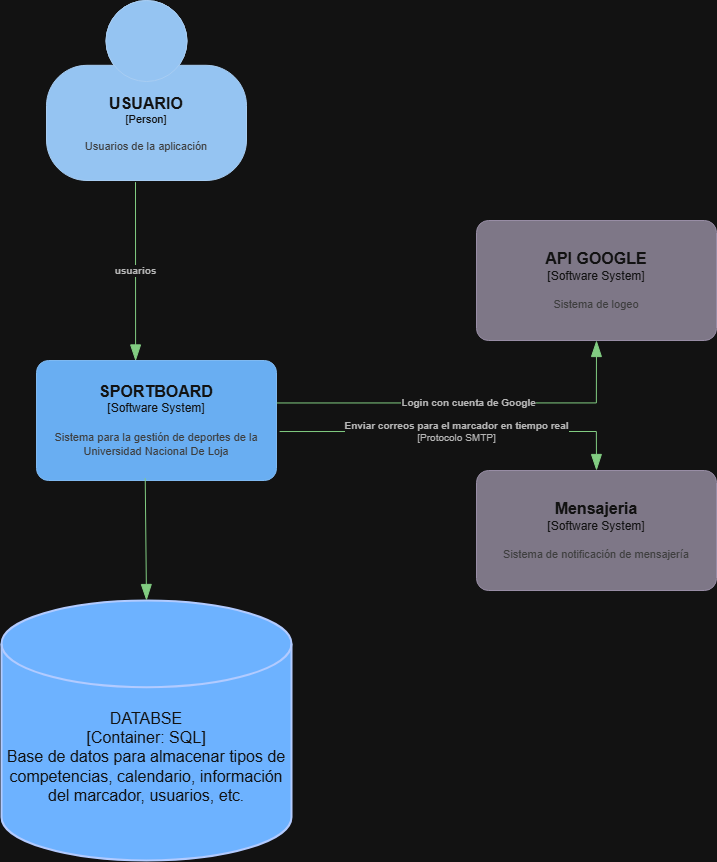
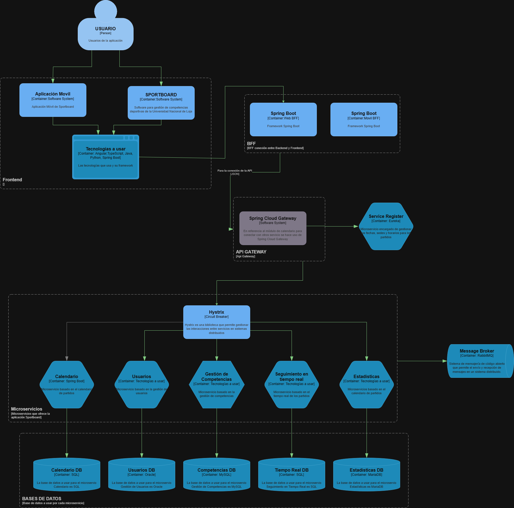
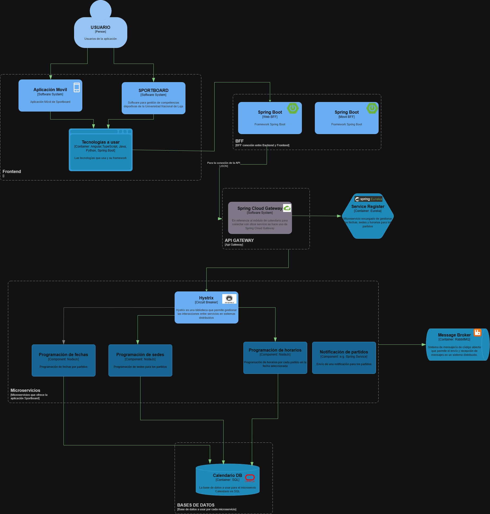

Documentación de Microservicio: Calendario
1 Descripción del Microservicio
El microservicio Calendario es responsable de gestionar los eventos y calendarios deportivos. Proporciona funcionalidades para agregar, editar, y consultar eventos relacionados con las actividades deportivas del sistema.
1.1 Funcionalidades
- Gestión de eventos: Permite crear, editar y eliminar eventos deportivos.
- Consulta de eventos: Los usuarios pueden consultar eventos por fecha y categoría.
- Notificaciones: Envía notificaciones a los usuarios sobre próximos eventos.
- Integración con otros microservicios: El microservicio Calendario interactúa con otros servicios como
UsuariosyEstadísticaspara obtener información sobre usuarios y estadísticas de eventos.
2 Endpoints
2.1 Descripción
Un endpoint consiste en una dirección específica dentro de una API, la cual permite acceder a un recurso o la ejecución de una acción en un servidor. En otras palabras, es un punto de contacto entre el cliente y el servidor
2.2 Endpoints
Los Endpoints utilizados en el proyecto estan relacionados a una API REST para el modulo de Calendario. A continuación, se presenta los endpoints que permiten realizar las operaciones CRUD (Crear, Leer, Actualizar y Eliminar) sobre eventos o registros en el calendario.
| Método HTTP | Endpoint | Descripción |
|---|---|---|
GET |
/api/calendario |
Obtiene todos los eventos del calendario. |
GET |
/api/calendario/{id} |
Obtiene un evento específico según su ID. |
POST |
/api/calendario |
Crea un nuevo evento en el calendario. |
PUT |
/api/calendario/{id} |
Actualiza un evento existente según su ID. |
DELETE |
/api/calendario/{id} |
Elimina un evento del calendario según su ID. |
2.3 Ejemplo
En el código presente, se define un controlador REST mediante Spring Boot el cual maneja solicitudes HTTP dirigidas a /api/calendar. A continuación, se expone un ejemplo de endpoint GET /api/calendar/hola, el cual responde con el texto que se define: “Hola”

3 Integración de Kong API Gateway con el Microservicio Calendar
3.1 Descripción
Kong es un API Gateway de código abierto que actúa como intermediario para gestionar, enrutando y protegiendo las APIs del sistema. Su integración en este proyecto facilita la gestión de microservicios, como el módulo de Calendario, permitiendo enrutamiento, autenticación, monitoreo y control de acceso centralizado.
En su versión gratuita (Community), Kong no incluye una interfaz gráfica, por lo que se ha utilizado Konga como alternativa para gestionar las API y configurar los microservicios de manera eficiente.
3.2 Arquitectura
Se ha utilizado Docker y Docker-Compose para la implementación de Kong y sus servicios asociados. La configuración de Kong incluye:
- Kong Database (MySQL): Esta base de datos almacena la configuración y datos relacionados con los microservicios gestionados por Kong.
- Kong Migration: Realiza las migraciones necesarias en la base de datos para inicializarla con los esquemas adecuados.
- Kong Gateway: Actúa como el API Gateway central para enrutar las solicitudes a los microservicios. Se configura con conexión a la base de datos MySQL y otros parámetros relacionados.
- Konga: Es una interfaz gráfica para la administración de Kong, permitiendo gestionar las API y microservicios de manera fácil.
3.3 Docker-Compose
A continuación, se presenta el archivo docker-compose.yml que se utiliza para levantar los servicios de Kong, Konga y la base de datos MySQL.
```yaml version: ‘3’ services: kong-db: image: mysql:8.0 container_name: kong-db volumes: - db-data-kong-mysql:/var/lib/mysql networks: - kong-net ports: - “3306:3306” environment: MYSQL_ROOT_PASSWORD: pis5 MYSQL_DATABASE: Sportboard_Calendario MYSQL_USER: kong MYSQL_PASSWORD: pis5
kong-migration: image: kong depends_on: - kong-db container_name: kong-migration networks: - kong-net restart: on-failure environment: - KONG_DATABASE=mysql - KONG_PG_HOST=kong-db - KONG_PG_USER=kong - KONG_PG_PASSWORD=pis5 - KONG_PG_DATABASE=Sportboard_Calendario command: kong migrations bootstrap
kong: image: kong container_name: kong environment: - LC_CTYPE=en_US.UTF-8 - LC_ALL=en_US.UTF-8 - KONG_DATABASE=mysql - KONG_PG_HOST=kong-db - KONG_PG_USER=kong - KONG_PG_PASSWORD=pis5 - KONG_PG_DATABASE=Sportboard_Calendario - KONG_CASSANDRA_CONTACT_POINTS=kong-db - KONG_PROXY_ACCESS_LOG=/dev/stdout - KONG_ADMIN_ACCESS_LOG=/dev/stdout - KONG_PROXY_ERROR_LOG=/dev/stderr - KONG_ADMIN_ERROR_LOG=/dev/stderr - KONG_ADMIN_LISTEN=0.0.0.0:8001, 0.0.0.0:8444 ssl restart: on-failure ports: - 8000:8000 - 8443:8443 - 8001:8001 - 8444:8444 links: - kong-db:kong-db networks: - kong-net depends_on: - kong-migration
konga: image: pantsel/konga ports: - 1337:1337 links: - kong:kong container_name: konga networks: - kong-net environment: - NODE_ENV=production - DB_ADAPTER=mysql - DB_HOST=kong-db - DB_USER=kong - DB_PASSWORD=pis5 - DB_DATABASE=Sportboard_Calendario
volumes: db-data-kong-mysql:
networks: kong-net: external: false
3.4 Docker-File
A continuación, se presenta el archivo DockerFIle que se utiliza para construir la imagen del microservicio Calendario. Este archivo esta diseñado para utilizar Java 17 y ejecutar una aplicación Spring Boot
Usa una imagen base de Java: FROM openjdk:17-jdk-slim
Establece el directorio de trabajo: WORKDIR /app
Copia el JAR generado al contenedor: COPY target/calendarioModule-0.0.1-SNAPSHOT.jar app.jar
Expone el puerto que usa Spring Boot: EXPOSE 9000
Comando para ejecutar la aplicación: ENTRYPOINT [“java”, “-jar”, “app.jar”]
4 Modelo C4
4.1 Descripción
El Modelo C4 es una metodología para visualizar la arquitectura de software a diferentes niveles de detalle. Cada nivel proporciona una visión diferente de la arquitectura, ayudando a los equipos de desarrollo, operaciones y otros stakeholders a comprender cómo está estructurado y funciona el sistema.
A continuación, se explicará acerca de los 4 niveles del modelo C4:
4.1.1 Nivel 1
El diagrama de Contexto es el nivel más alto y proporciona una visión global del sistema en su entorno. Este diagrama se centra en el sistema como un todo y muestra cómo interactúa con usuarios externos, sistemas o servicios. No profundiza en los detalles internos, sino que establece el alcance y las interacciones externas.
A continuación, se muestra la visión general del sistema y las interacciones con actores externos:

4.1.2 Nivel 2
El diagrama de Contenedores descompone el sistema en contenedores, que representan aplicaciones o servicios ejecutables. Cada contenedor es un proceso que se ejecuta y tiene una funcionalidad propia (por ejemplo, una base de datos, un servicio web o una aplicación móvil).
A continuación, se desglosa el sistema en aplicaciones o servicios que interactúan entre sí:

4.1.3 Nivel 3
El diagrama de Componentes descompone los contenedores en sus partes más pequeñas y muestra los componentes principales dentro de cada contenedor. Un componente es una unidad funcional del sistema que encapsula una lógica o funcionalidad específica (como un servicio, un módulo o una clase).
A continuación, se muestra cómo esta estructurado un contenedor, desglosando sus principales componentes:

4.1.4 Nivel 4
El diagrama de Código es el nivel más bajo de detalle y muestra cómo está implementado un componente a nivel de clases, métodos y relaciones entre estos. Este nivel es útil para los desarrolladores cuando necesitan ver cómo se estructuran los detalles de implementación del código.